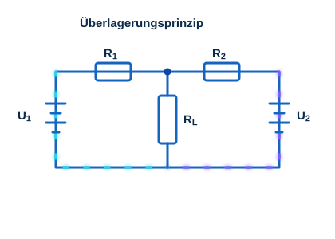

Was ist das Überlagerungsprinzip?
Das Überlagerungsprinzip ist ein Verfahren in der Elektrotechnik, das in linearen Schaltungen mit mehreren unabhängigen Quellen angewendet wird. Die Wirkung jeder Quelle wird einzeln betrachtet und anschließend zum Gesamtergebnis überlagert (addiert).

Berechnung
Vorgehensweise bei mehreren Quellen
- Einzelbetrachtung: Jede unabhängige Quelle wird nacheinander einzeln betrachtet.
- Alle anderen Quellen werden durch ihren Ersatz ersetzt: Spannungsquellen durch einen Kurzschluss, Stromquellen durch eine Unterbrechung (offene Klemme).
- Berechnung der Wirkung: Für jede Quelle wird die Schaltung einzeln analysiert.
- Superposition: Die Einzelergebnisse werden unter Beachtung von Vorzeichen und Polarität addiert.
Ugesamt = U₁ + U₂
Beispielrechnung
- Schritt 1: Nur Quelle 1 ist aktiv, Quelle 2 wird durch ihren Ersatz ersetzt. Die Wirkung von U₁ wird berechnet.
- Schritt 2: Nur Quelle 2 ist aktiv, Quelle 1 wird durch ihren Ersatz ersetzt. Die Wirkung von U₂ wird berechnet.
- Schritt 3: Die Einzelwirkungen werden zur Gesamtwirkung überlagert (addiert).
Belastung und Einfluss weiterer Bauteile
Durch das Zuschalten zusätzlicher Lasten verändern sich die Teilergebnisse. Auch in diesem Fall lässt sich das Verhalten mit dem Überlagerungsprinzip schrittweise nachvollziehen.
Rechner: Superposition zweier Spannungen
Ugesamt = U₁ + U₂
–
Schaltungsmodul: Verwendung der Übungsschaltung
Über Schalter lassen sich die einzelnen Quellen aktivieren bzw. deaktivieren. An den Messpunkten werden die Teilspannungen und die überlagerte Gesamtspannung gemessen.
Übungen
- Einzelquellen aktivieren: Jeweils nur eine Quelle einschalten und die Wirkung messen.
- Gesamteffekt berechnen: Die gemessenen Einzelwirkungen addieren und mit der Messung bei beiden aktiven Quellen vergleichen.
- Variationen durch Lasten: Zusätzliche Lasten zuschalten und den Einfluss auf das Ergebnis untersuchen.
Bauteilwerte (Beispielwerte)
| Bauteil | Wert |
|---|---|
| Spannungsquelle 1 | 12 V |
| Spannungsquelle 2 | 5 V |
| Widerstände | 470 Ω – 10,47 kΩ (einstellbar) |
| Zusätzliche Lasten | 470 Ω (Beispiel) |